|


|

|
|
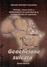 |
Geochelone sulcata.
Manuel Merch�n.
191 p�ginas, 2003, Ediciones
Reptilia. |
|
 |
Las Tortugas Terrestres.
Marta Avanzi.
128 p�ginas, 2002, Editorial De Vecchi, Colecci�n
"Acuarama". |
|
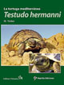 |
Testudo hermanni, la tortuga
mediterr�nea. Holger
Vetter
325 p�ginas, 2006, Reptilia
Ediciones. |
|
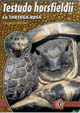 |
Testudo horsfieldii, La
tortuga rusa.
Thomas Wilms.
60 p�ginas. 2005, Ediciones Reptilia, Colecci�n
"Especie por Especie". |
|
|
Testudo marginata.
La tortuga almenada
Mario Herz.
62 p�ginas. 2007, Ediciones Reptilia, Colecci�n
"Especie por Especie". |
|
|
Tortugas de Caja, Terrapenes y otras especies.
Jordan Patterson.
64 p�ginas, 1995, Editorial Hispano Europea,
Colecci�n "Manuales de Terrario". |
|
|
Tortugas
Terrestres.
Jerry G. Walls.
64 p�ginas, 1998,
Editorial Hispano Europea, Colecci�n "Manuales de Terrario". |
|
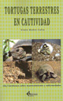 |
Tortugas terrestres en
cautividad. Gin�s
Rubio Cal�n
2006, 250 p�ginas, Egartorre. |
|
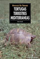 |
Tortugas
Terrestres Mediterr�neas.
Brian Pursall.
96 p�ginas, 2002,
Editorial Hispano Europea, Colecci�n "Manuales de Terrario". |
|
 |
|
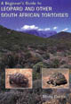 |
A Beginner's Guide to Leopard and
Other South African Tortoises.
Misty Corton .
32 p�ginas, 2000, Carapace Press. |
|
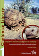 |
Leopard and African Spurred Tortoise.
Stigmochelys pardalis and Centrochelys sulcata.
Holger Vetter.
192 p�ginas, 2005, Edition Chimaira, Colecci�n
"Chelonian Library", Volumen 1. |
|
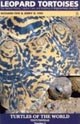 |
Leopard Tortoises.
The Natural History, Captice care and Breeding of Stigmochelys
pardalis.
Fife R.
97 p�ginas, 2006, Turtle and
tortoise preservation group.
|
|
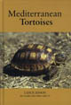 |
Mediterranean Tortoises.
Lance Jepson.
96 p�ginas, 2006, Kingdom Books. |
|
|
Popular Tortoises.
Phillipe de Vosjoli.
96 p�ginas, 2003, Advanced
Vivarium Systems, colecci�n "Herpetocultural Library". |
|
|
Practical Care and Maintenance of
the Redfoot Tortoise Geochelone Carbonaria in Captivity.
Mike Pingleton.
36 p�ginas, 2001, Carapace Press. |
|
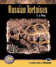 |
Russian Tortoises.
A complete guide to Testudo.
E.J. Pirog.
128 p�ginas, 2005, T.F.H.
Publications. |
|
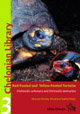 |
South American Tortoises:
Chelonoidis carbonaria, C. denticulata und C. chilensis
Sabine Vinke, Holger Vetter,
Thomas Vinke, Susanne Vinke.
250 p�ginas, 2008, Edition Chimaira, Colecci�n
"Chelonian Library", Volumen 3. |
|
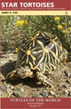 |
Star Tortoises, Natural History,
Captive Care, and Breeding of Geochelone Elegans.
Jerry D. Fife.
100 p�ginas, 2007, Turtle and
tortoise preservation group. |
|
|
Sulcatas. African spurred
tortoises in captivity (with notes on other popular tortoises).
Russ Gurley.
98 p�ginas, 2005 (2� edici�n),
ECO/Serpent's Tale Nat Hist Books, "Professional Breeders Series". |
|
 |
The African spurred Tortoise
Geochelone sulcata in Captivity.
Russ Gurley.
80 p�ginas, 2002, Edition
Chimaira with the turtle and tortoise preservation group. |
|
|
The Box Turtle Manual.
Philippe De Vosjoli, Roger J.
Klingenberg. 78 p�ginas,
2004, Advanced Vivarium Systems, colecci�n "Herpetocultural
Library". |
|
|
The Care and Breeding of the
African Spurred Tortoise Geochelone Sulcata.
Richard Wilson, Robyn Wilson.
36 p�ginas, 1997, Carapace Press. |
|
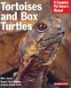 |
Tortoises and Box Turtles.
Hartmut Wilke.
64 p�ginas, 2000, Barron's
Educational Series, Colecci�n "Complete Owner's Manual". |
|
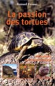 |
La passion des
tortues.
Bernard Devaux.
212 p�ginas, 1998,
Sang de la Terre (Connaissance de la nature).
|
|
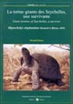 |
La tortue g�ante des Seychelles,
une survivante. Bernard
Devaux.
126 p�ginas, 2007, Edtions Soptom. |
|
 |
L'�levage des tortues terrestres.
J�r�me Maran.
82 p�ginas, 1999, Philippe G�rard
Editions. |
|
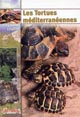 |
Les tortues m�diterran�ennes.
Laurent Lesueur.
95 p�ginas, 2006, Animalia
Editions. |
|
|
Les tortues terrestres.
Reiner Praschag.
95 p�ginas, 2004, Ulmer. |
|
 |
L'hibernation des Tortues.
Bernard Devaux.
26 p�ginas, 2001, Editions
Soptom. |
|
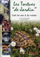 |
Les tortues "de jardin" Guide des
soins et des maladies.
Schilliger L.
160 p�ginas, 2007, Animalia
Editions. |
|
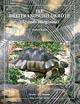 |
Breitrandschildkr�te (Testudo Marginata)
Manfred Rogner.
128 p�ginas, 2006,
Natur und Tier-Verlag.
|
|
 |
Die
geheimnisvolle Welt der Schildkr�ten.
John Lehrer.
127 p�ginas, 1994,
Karl M�ller, Erlangen.
|
|
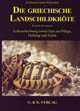 |
Die griechische Landschildkr�te.
Gerhard Polaschek.
130 p�ginas, 1997, G. & K.
Buchverlag. |
|
|
Die
Landschildkr�ten Europas.
Walter Kirsche.
104 p�ginas, 1998,
Mergus.
|
|
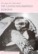 |
Die Landschildkr�ten Europas.
Fritz J. Obst, Walter Meusel.
72 p�ginas, 2003, Westarp
Wissenschaften. |
|
|
Ern�hrung von Landschildkr�ten.
Carolin Dennert.
144 p�ginas, 2001, Natur und Tier-Verlag. |
|
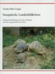 |
Europ�ische Landschildkr�ten.
Ursula F�hr-Campi.
160 p�ginas, 1997. |
|
 |
Europ�ische
Landschildkr�ten.
R�diger Daum.
64 p�ginas, 1998,
Broschiert - Landbuch-Verlag.
|
|
 |
Europ�ische Landschildkr�ten.
Richard Mayer.
128 p�ginas, 2001,Agrar Verlag. |
|
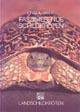 |
Faszinierende Schildkr�ten.
Landschildkr�ten. Ignaz
A. Basile.
143 p�ginas, 1989, Naglschmid. |
|
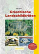 |
Griechische
Landschildkr�ten.
Uwe Dost .
80 p�ginas, 2006,
Herpeton.
|
|
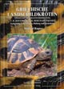 |
Griechische
Landschildkr�ten.
Manfred Rogner.
167 p�ginas, 2005,
Natur und Tier-Verlag.
|
|
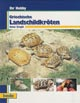 |
Griechische Landschildkr�ten.
Rainer Zirngibl.
95 p�ginas, 2000, Bede. |
|
|
Landschildkr�ten.
Veronika M�ller, Wolfgang Schmidt.
196 p�ginas, 1995, Natur und Tier-Verlag. |
|
|
Landschildkr�ten.
Werner Ullrich.
128 p�ginas, 1999,
Falken.
|
|
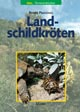 |
Landschildkr�ten.
Reiner Praschag, Dietrich R�ssel.
95 p�ginas, 2005, Ulmer (Eugen). |
|
|
Landschildkr�ten.
Heidi Rogner.
121 p�ginas. 2001, Franckh-Kosmos
Verlag. |
|
|
Landschildkr�ten.
Evelyn Seeger.
64 p�ginas, 2000, Augustus Verlag. |
|
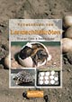 |
Vermehrung von
Landschildkr�ten.
Thomas Vinke, Sabine
Vinke.
189 p�ginas, 2004,
Herpeton.
|
 
|
|